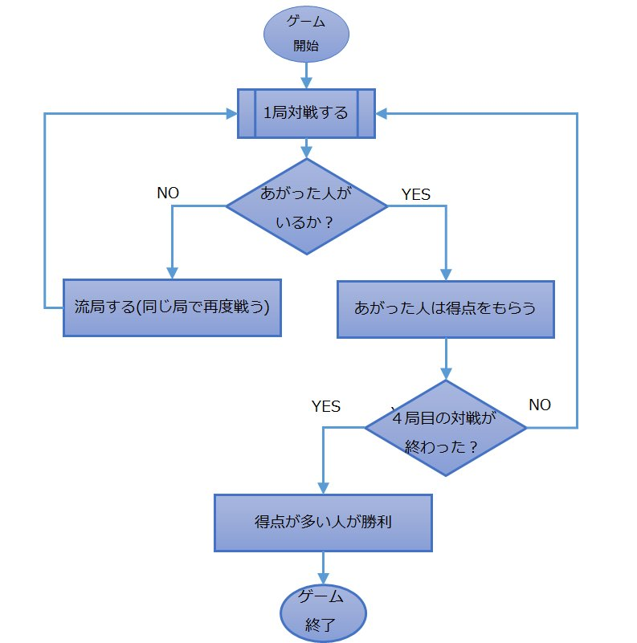

9.試合の流れ
1試合では4局対戦する

さあ！ルール説明もいよいよこれがラスト！試合の流れを説明するわ！

わーい！早く覚えて遊びたいよ！もったいぶらないで早く教えてリコ先生！
今まで説明してきた、「手牌を配ってから、どちらかのプレイヤーが上がりになるまで戦うという一連の流れ」…この勝負1回のことを局といいます。
キュアジャンでは4局対戦を行って、得点を奪い合い、4回目の局が終了した時点で得点の高いプレイヤーの勝利となるわ。
なるほど！それからそれから？
1局の中で引ける牌の枚数は48枚までなの。牌を引き切っても勝負がつかない場合はその局は引き分けとなり、もう一回対戦をやり直します。これを流局というわ。
流局した場合は次の局に進まないので、「４局対戦すると試合終了」というのは正確に言えば、「流局しなかった局が4回終了すれば、試合終了となる」ってことね。
分かりやすいように、図も用意しておいたから、これを見て流れを理解してね。
キュアジャンの対戦の流れ

よーくわかったよ！これでもうゲームをプレイする準備はバッチシだあ！
それじゃあ！さっそくダウンロードのページからゲームをダウンロードして遊んでみましょう！健闘を祈るわ！
[9/9]